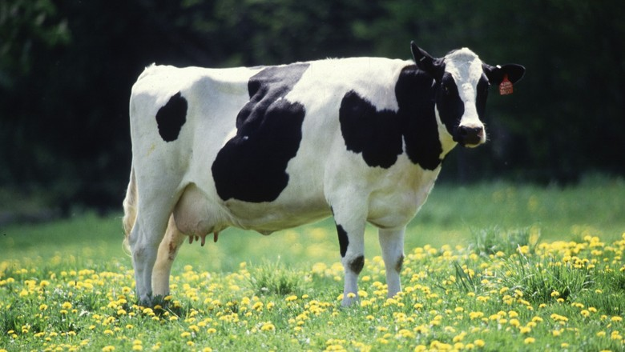
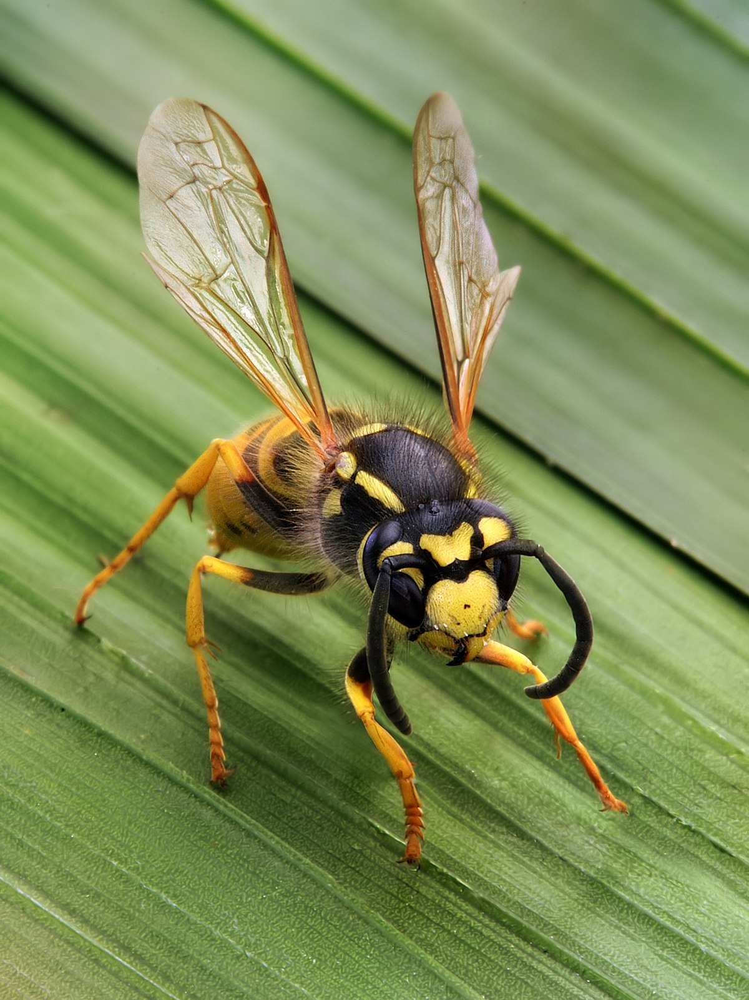

Vaca
Bos taurus
| Reino: | Animalia |
| Classe: | Mammalia |
Gado-bovino-doméstico (nome científico: Bos
taurus) é uma espécie de bovino do gênero Bos e da ordem
Artiodactyla. É um mamífero ungulado e apresenta dois dígitos (dedos) em cada membro.
O macho da espécie recebe o nome de boi, ou touro,
enquanto que a fêmea é conhecida por vaca e o animal jovem por bezerro, e
depois novilho.
A espécie é um ruminante, ou seja, regurgita o alimento para a boca após sua
ingestão, onde é novamente mastigado e deglutido. O estômago dos ruminantes é dividido em retículo, rúmen,
omaso e abomaso.
Essa espécie foi domesticada pelo homem e é utilizada em larga escala em muitas
atividades como a produção de carne e de leite, representando grande importância para a economia de muitos
países.
Vespa
Hymenoptera
| Reino: | Animalia |
| Classe: | Insecta |
A ordem Hymenoptera (himenópteros) é um dos
maiores grupos entre os insetos, compreendendo as vespas, abelhas e formigas. Possui atualmente cerca de 115
000 espécies descritas (Hanson & Gauld, 1995), distribuídas em 99 famílias taxonômicas (Goulet & Huber,
1993). O nome é derivado do grego (hymen = membrana; ptera = asas), com as espécies deste
grupo apresentando dois pares de asas membranosas, sendo que as asas anteriores são maiores do que as
posteriores. Alguns grupos, como as formigas operárias e as vespas da família Mutilidae, perderam
secundariamente as asas.
As fêmeas possuem um ovipositor típico que permite a perfuração do hospedeiro ou
acessar locais inacessíveis, estando muitas vezes modificado em um ferrão. Pode ser até 6 vezes maior do que
o comprimento do corpo em diversos grupos, ou tão curto que é dificilmente visível. O desenvolvimento é do
tipo holometabólico (metamorfose completa), que apresenta os estágios de ovo, larva, pupa e adulto.
O grupo inclui uma impressionante diversidade de formas, tamanhos e hábitos de vida.
Os maiores himenópteros podem alcançar cerca de 15 cm de comprimento, tais como as vespas caçadoras da
família Pompilidae, marimbondos da família Vespidae e vespas parasitoides da família Ichneumonidae. Os
menores são as vespas da família Trichogrammatidae, que podem ter apenas 1 mm de comprimento.